In this photo essay, I wanted to explore how the line between civilized and wild was drawn and how it has been complicated throughout time. This essay is my understanding of the evolution of the line.
Press the i on each image for captions.
I. Establishment
The line is clearly drawn through the development of technology and language.
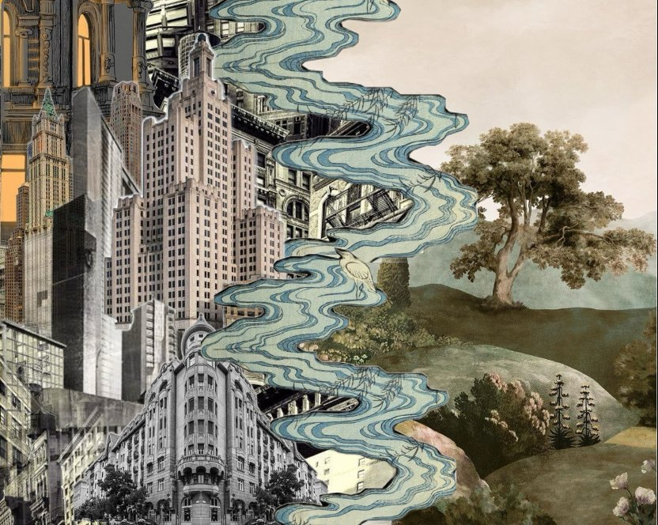
The harsh lines of architecture contrast with the soft lines from nature. Digital Collage by Feier Yu; Sourced Photos from Pinterest.
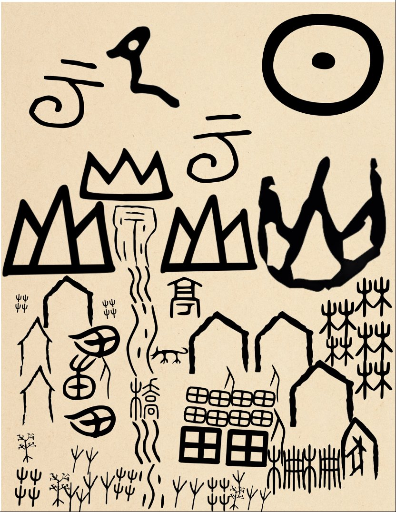
Characters delineate civilized from wild. The characters are the lines themselves. Digital Collage by Feier Yu; Sourced Photos from Wikipedia.
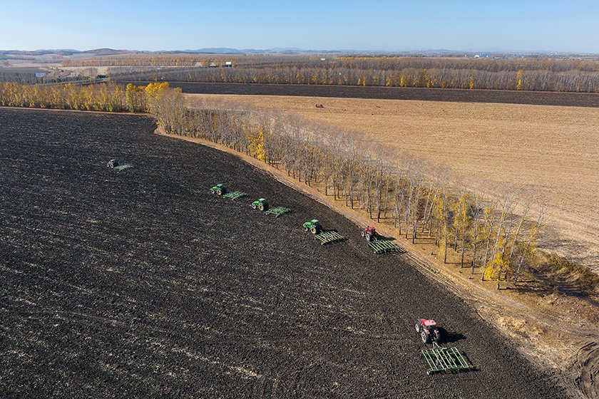
Technology shapes the line. Visual China. HeiLongJiang, ShuangYa Mountain. 2023. Caixin, science.caixin.com/m/2023-07-25/102082390.html. Accessed 3 May 2026.
II. Collapse
The line fails?
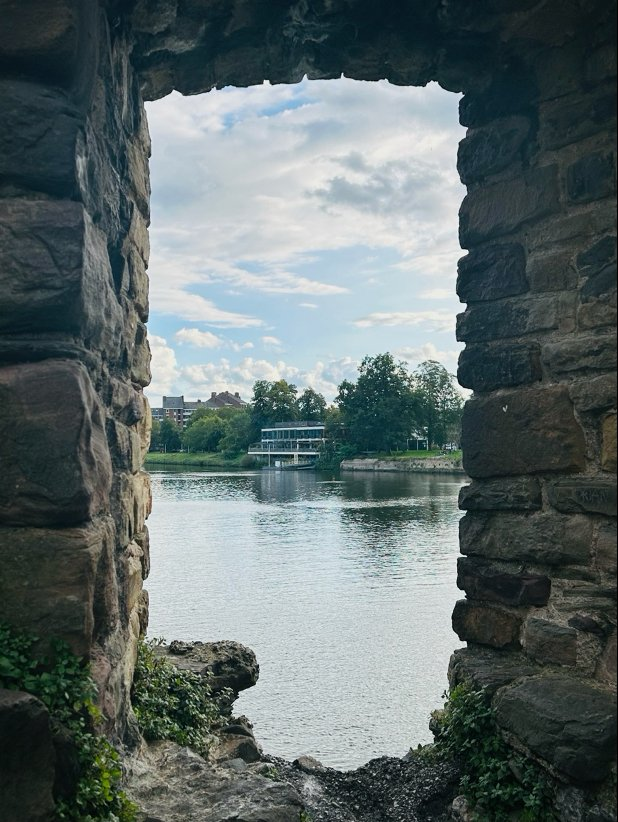
The wild grows on what was previously civilized. A new definition of civilized and wild is forming. Photo Shot by Feier Yu; Maastricht, Limburg, Netherlands.
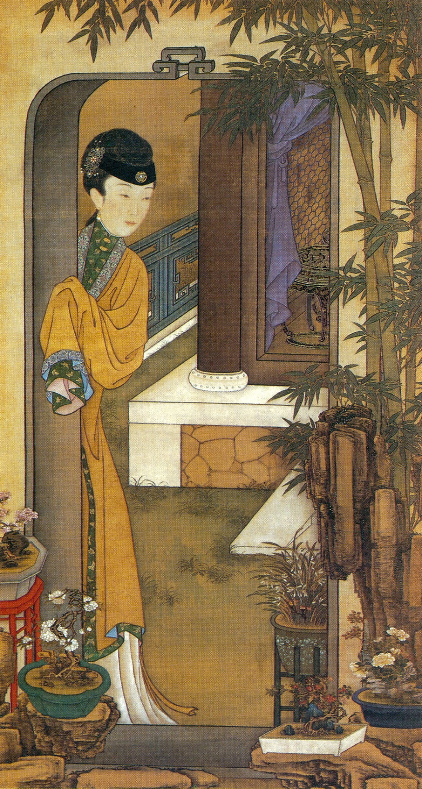
Both wild and civilized are confined by the line. With a contemporary perspective, it is difficult to interpret which is civilized and which is wild. Leaning on Door Admiring Bamboo [倚门观竹]. c. 1723–1735. YongZheng Painting of Twelve Beauties [雍正十二美人图], Palace Museum, Beijing.
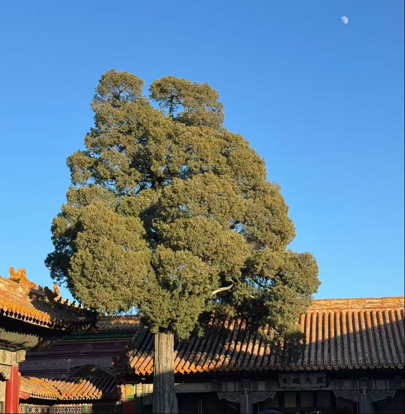
The wild persists beyond the line drawn by the civilized. Photo Shot by Feier Yu; Forbidden City, Beijing, China.
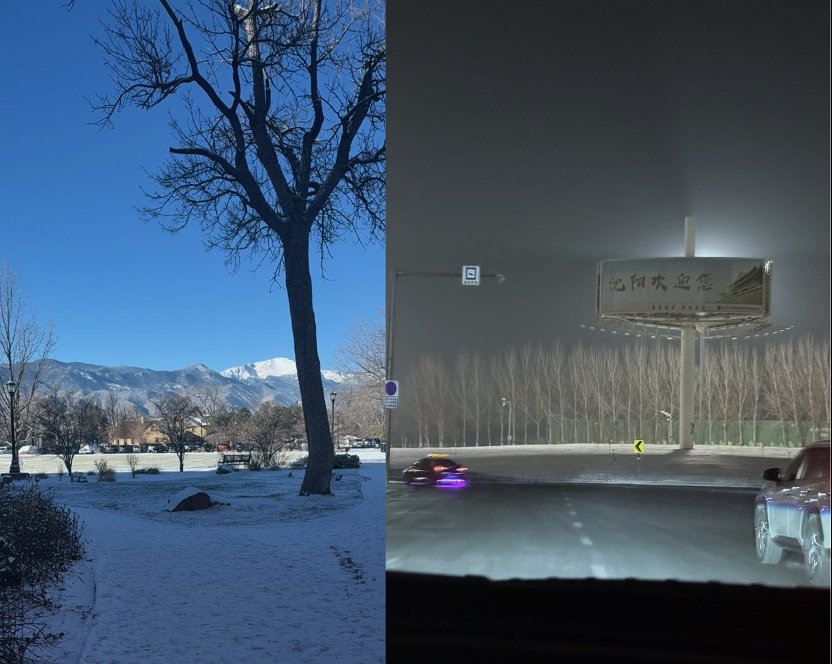
The line is deeply personal and follows everyone wherever they go. Photos Shot by Feier Yu; Left: Colorado Springs, Colorado, USA. Right: Shenyang, Liaoning, China.
III. Reformation
The line shifts. Is it blurred or is it clearer?
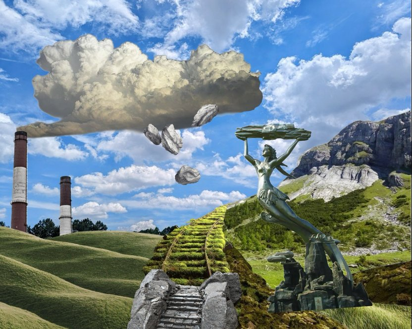
Mythology, Industrialization, and the line. Digital Collage by Feier Yu; Sourced Photos from Pinterest.
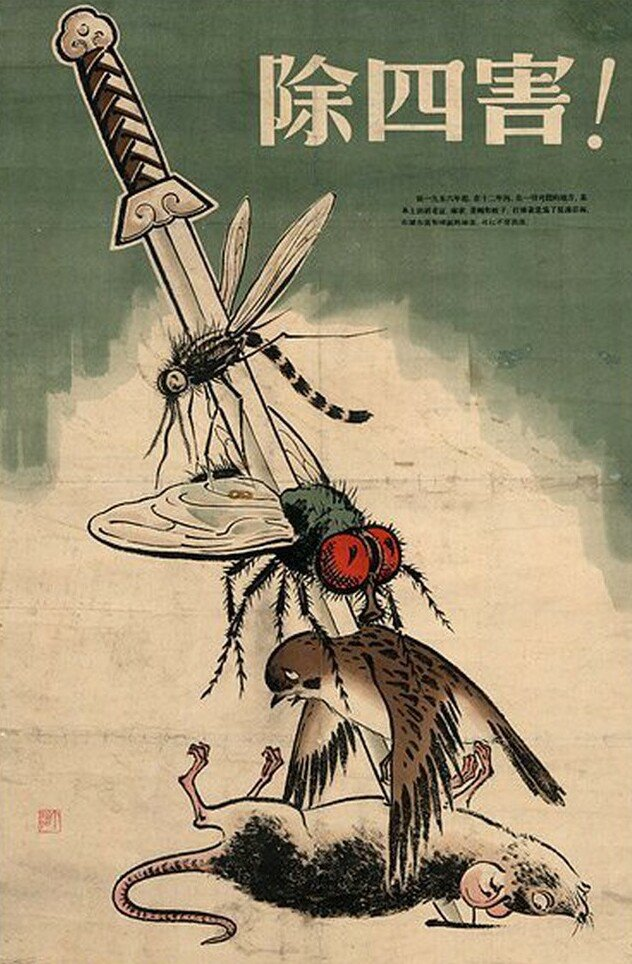
The line forms a target. What are the dangers of this line? "Exterminate Four Pests" Poster, China, 1958.
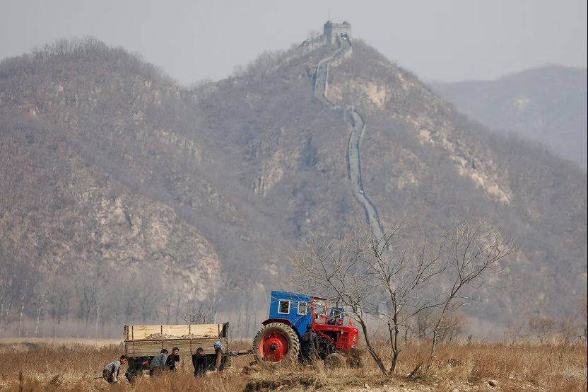
What is civilized in this photo? Sagolj, Damir. North of the Town of Sinuiju, North Korea. 2 Apr. 2017. The Atlantic, www.theatlantic.com/photo/2017/04/along-the-north-korean-border/523404/. Accessed 3 May 2026.
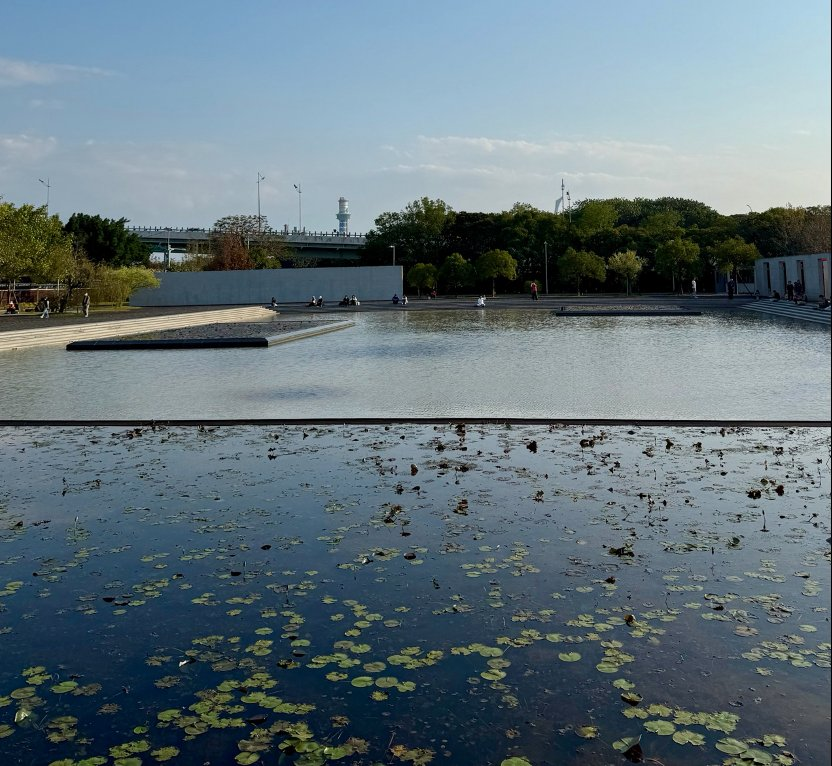
Where does religion fit in this separation? Photo Shot by Feier Yu; NongChan Buddhist Monastery, Taipei, Taiwan.
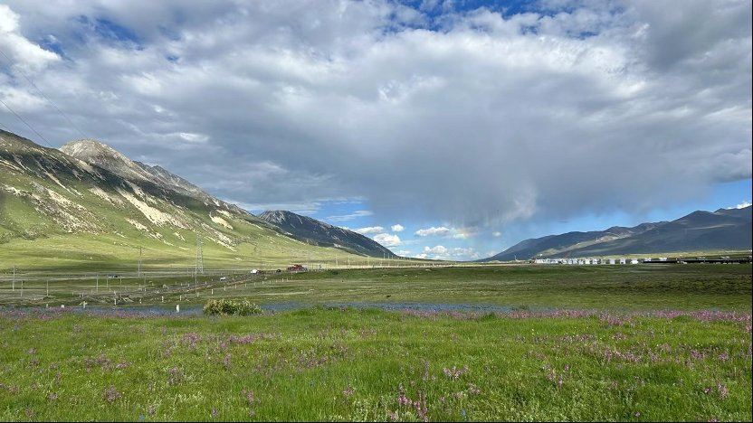
The line is expanding. These concepts infiltrate the steppe. Photo Shot by Feier Yu; Litang, Garzê Tibetan Autonomous Prefecture, Sichuan, China.
IV. Understanding
The line is acknowledged, but what is there to do?
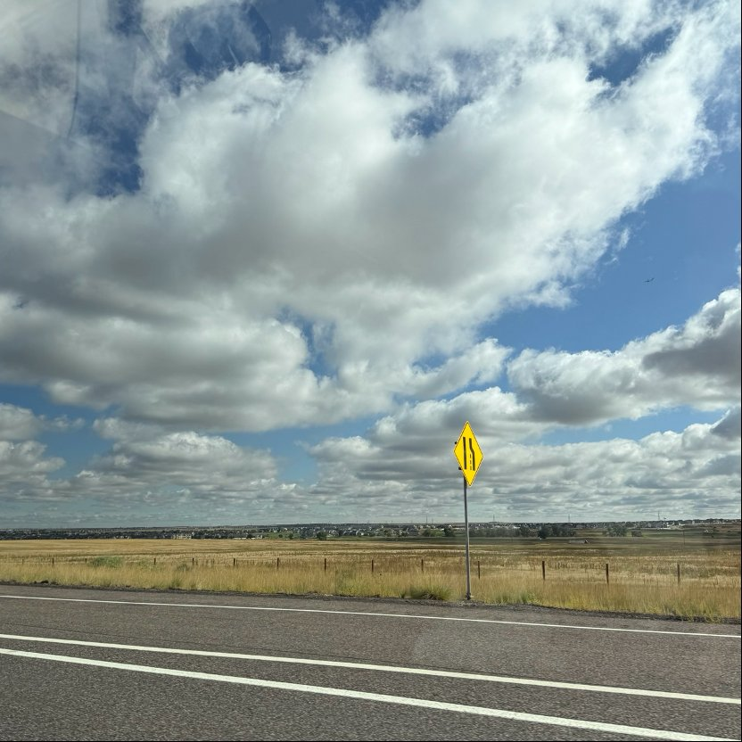
The concepts are merging. Photo Shot by Feier Yu; Colorado Springs, Colorado, USA.
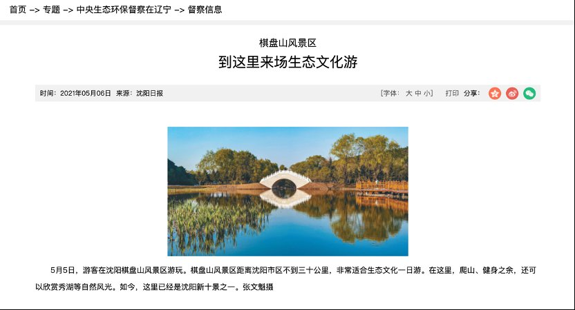
The line is exploited. QiPan Mountain. Shenyang, Liaoning, China. Shenyang Daily [沈阳日报], www.shenyang.gov.cn/zt/zysthbdczln/dcdt/202112/t20211201_1709794.html. Accessed 3 May 2026.
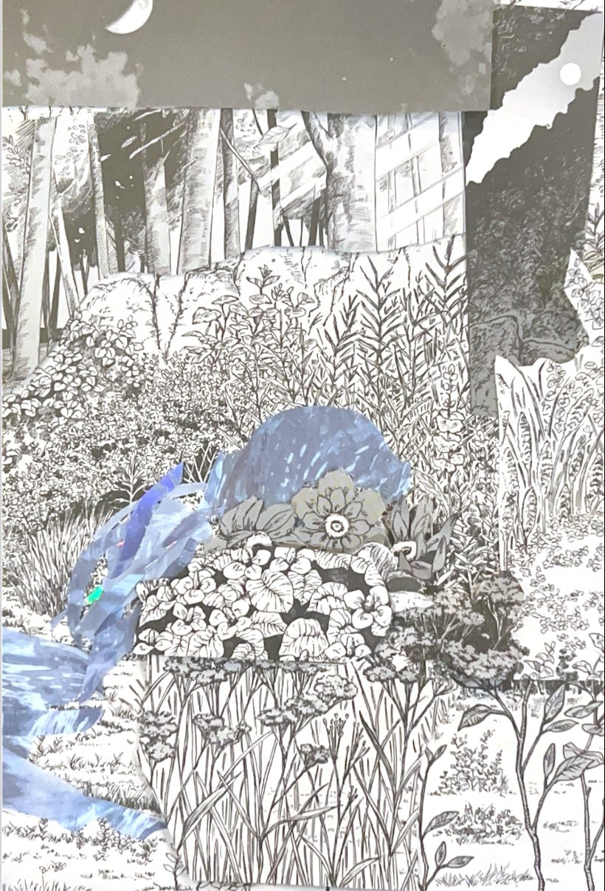
Is there a separation now? Paper Collage by Feier Yu; cutouts from manga and reflective paper.
Afterword
Through my interpretation of the evolution of the line, I have realized that the line's barriers have shifted completely across time. However, regardless of a clear or obscured line, the line still exists within us and there appears to be no clear solution to dissolve it. This led me to question if there is a necessity to dissolve it. Do we still view the "wild" and "civilized" as holding distinct values, or are both equal in our eyes? The line has been altered to a point where everything is simultaneously wild and civilized. What do we do now, when there is no distinction?
Works Cited
Collage Photos Sourced from Pinterest.
Leaning on Door Admiring Bamboo [倚门观竹]. c. 1723–1735. YongZheng Painting of Twelve Beauties [雍正十二美人图], Palace Museum, Beijing.
Sagolj, Damir. North of the Town of Sinuiju, North Korea. 2 Apr. 2017. The Atlantic, www.theatlantic.com/photo/2017/04/along-the-north-korean-border/523404/. Accessed 3 May 2026.